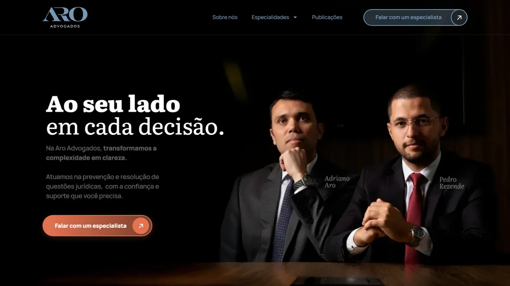
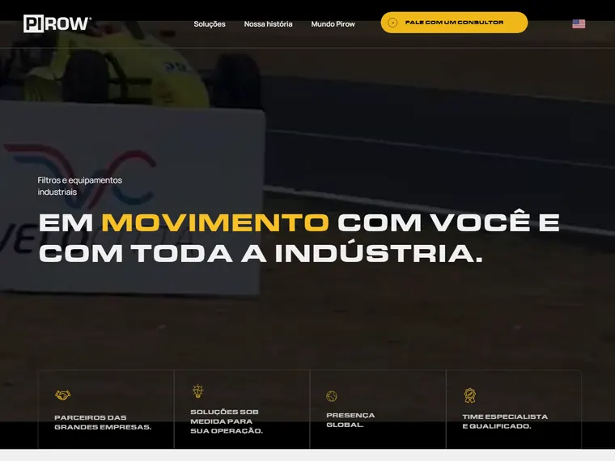
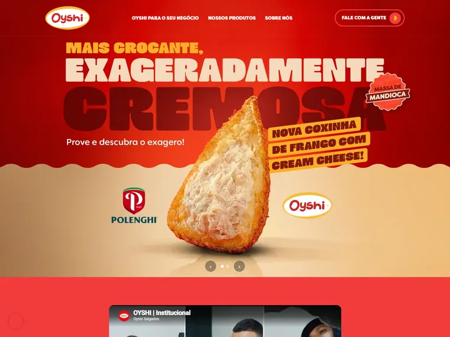
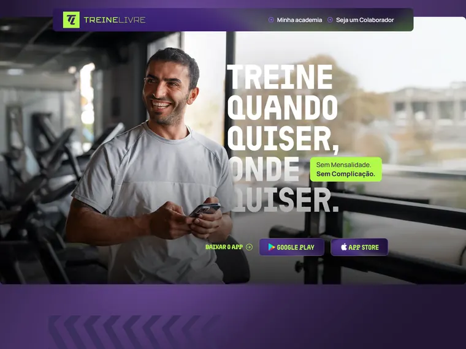
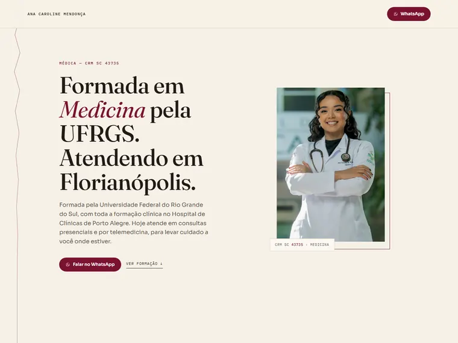
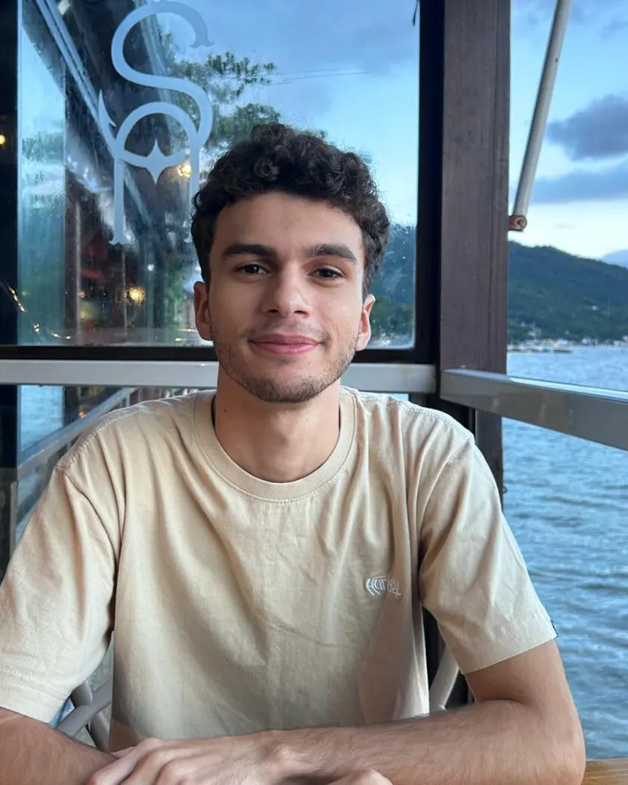

Criação de sites — Londrina, Paraná
O seu negócio, bem apresentado.
Sites para consultório, escritório, indústria e distribuidora. Do primeiro desenho até o dia em que a página entra no ar.

Escritório de advocacia. O site organiza as áreas de atuação e encurta o caminho até falar com um especialista.
Projetos selecionados
Cinco sites no ar
-

-
-

-

-

Serviços
O que eu faço
-
Site institucional
A página que apresenta o negócio, o que ele faz e como falar com ele.
-
Landing page
Uma página só, feita para uma oferta e um botão.
-
Site para consultório e clínica
Formação, especialidades e o caminho mais curto até o contato.
-
Publicação e domínio
Coloco no ar no seu endereço e continuo por perto depois.
Como funciona
Do primeiro contato ao ar
-
01
Conversa
Você manda uma mensagem e a gente fala sobre o que o site precisa fazer e para quem.
-
02
Desenho
Eu mostro o desenho das páginas antes de construir. Ajuste faz parte, e é mais barato nessa hora.
-
03
Construção
Construo a página inteira e testo no celular, que é por onde a maioria vai abrir.
-
04
No ar
Publico no seu domínio e continuo por perto quando for preciso mexer em alguma coisa.
Construí cerca de 300 páginas sem assinar nenhuma. Este site é o primeiro que leva o meu nome.
-
Feito para celularA maioria vai abrir pelo telefone.
-
Rápido de abrirPágina leve, sem travar na espera.
-
Você fala comigoSem intermediário e sem atendimento.
-
Suporte depoisContinuo por perto para mexer no que precisar.
Sobre
Fiz muito site que não levava o meu nome.
Faço sites desde 2022. Nesse tempo construí cerca de 300 páginas em WordPress e Elementor — boa parte delas nos bastidores, para agências e para experts do mercado digital brasileiro, sem assinar nenhuma.
Hoje faço o projeto inteiro: decido o visual e implemento. Trabalho de Londrina, no Paraná, como MEI, e atendo de onde você estiver.

Contato